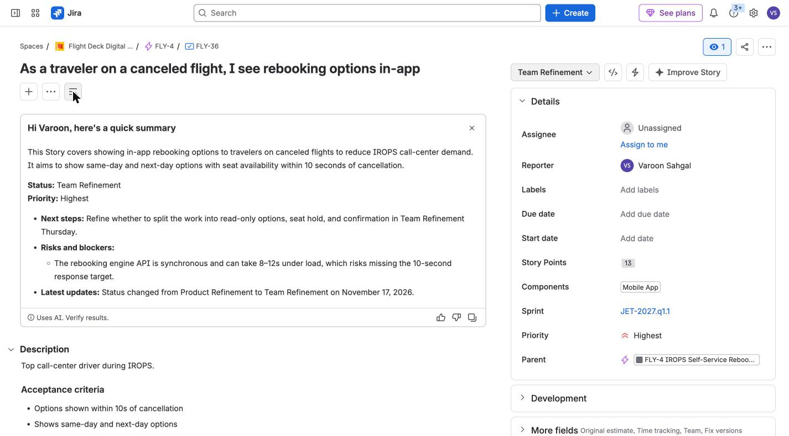
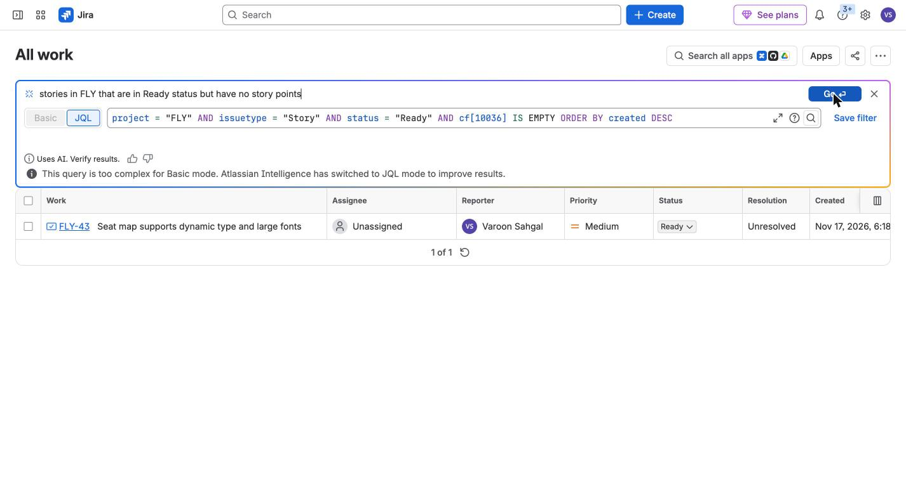
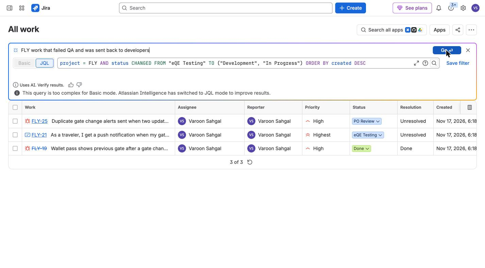

Rovo is Atlassian's AI layer across Jira, Confluence and connected apps. This manual covers what each instrument does, when to use chat and when to use an agent, a prompt pattern you can use every day, and how to verify what the AI tells you. Then five missions that go well past the basics.
✨ Search · Chat · Agents · Studio🧭 Used in Levels 1, 2 & 3✈ 5 missions · 1 quiz
RV-1 What Rovo is
⏱ 15 min📖 Concepts
After this section you can
Name Rovo's four parts and what each is for.
Describe how agents now work inside Jira.
Explain why two people may get different answers to the same question.
🔍
Search
One search across Atlassian apps and connected tools. Results are filtered by your permissions, so you never see anything you couldn't already open.
💬
Chat
A conversation grounded in your organization's content. Ask, summarize, compare, draft. You steer every turn. Rovo Chat also has a Max mode for heavier reasoning tasks.
🤖
Agents
Specialists with instructions, knowledge and sometimes actions. With Agents in Jira, teams can assign work to Rovo agents (and third-party agents), work with them in comments, and trigger them from automation rules or board columns. Agent actions are logged for audit.
🛠
Studio
Rovo Studio is where agents and no-code automations are built from natural-language descriptions. It ships with 20+ out-of-the-box agents and a preview pane to test an agent before it goes live.
From the flight deck
Rovo works like a well-briefed first officer. It knows what's in the logbook (your Jira and Confluence content), it can't open doors you can't open, and it still needs the captain (you) to confirm the important calls.
Why answers differ between people
Rovo answers from content the person asking can access. If your teammate can see a restricted Confluence space and you can't, their answer may include facts yours doesn't. Neither answer is “wrong”. They're built from different evidence.
RV-2 Chat or agent? The decision guide
⏱ 15 min🧭 Decision aid
Work through the checkpoints in order. The first “yes” tells you which tool to use.
1
Is this a one-off question, draft or exploration?
Yes → ChatNo → go to 2
2
Will you (or your team) do this same task again and again, with the same instructions?
Yes → AgentNo → Chat
3
Should it start by itself when something happens (a new item, a status change, a release)?
Yes → Agent triggered by automation or a board columnNo → Agent you invoke on demand
4
Does an out-of-the-box agent already do it?
Yes → Use it, and check the Studio catalog firstNo → Write an agent request (see RV-M4)
Scenario
Pick
Why
“What did we decide about partner rebooking?”
Chat
One question that needs content from several places.
Drafting acceptance criteria for a single story
Chat or Improve Story
One-off, and you edit the result.
Every new story should be checked against the Definition of Ready
Agent + automation
Repeatable, rule-based, event-triggered.
Weekly release notes from items Done in a version
Agent
Same format every time; consistency matters.
Brainstorming risks for the IROPS epic
Chat
Exploratory and conversational.
Triage of incoming bug reports into components
Agent (in a column or rule)
High volume, consistent judgement, auditable.
RV-3 Rovo inside Jira
⏱ 30 min🛠 Hands-on
After this section you can
Summarize a work item and judge what the summary missed.
Use Improve Story / Improve Bug without accepting fluff.
Turn plain English into JQL with Ask AI, and audit the result.
Use AI suggestions for child work items and comment replies.
1 · Summarize work item
Open any item and click Summarize work item. Rovo builds a briefing from the description, comments and history: status, next steps, risks and the latest update.
…/browse/FLY-36

On FLY-36, Rovo picked up the split suggestion and the 8–12 s rebooking API risk from the comments. Compare it with the thread yourself in Mission RV-M2.
2 · Improve Story / Improve Bug
The Improve button on a work item suggests a clearer description and acceptance criteria. Treat it as a draft from a keen new team member: often useful, sometimes generic. Keep specific, testable criteria. Delete anything like “should be intuitive”.
3 · Ask AI: natural language to JQL
On the search page, click Ask AI, describe what you want, and press Go. Rovo writes the JQL, switches to JQL mode if needed, and runs it. Two real examples from our sandbox:
Ask AI · example A

Accurate. “Stories in FLY that are in Ready status but have no story points” → cf[10036] IS EMPTY, where cf[10036] is the Story Points field → FLY-43.
Ask AI · example B

Close, with a quiet extra. “FLY work that failed QA and was sent back to developers” → it added "In Progress", a status our team doesn't use. The results happen to be right, but the logic isn't what you asked for.
4 · Suggested child work items
On an epic or a large story, look for AI suggestions to break the work down into child items. Use them as a starting list for refinement, not as the plan. The team still decides the split, the order and the estimates.
5 · Comment assists
The comment box offers quick starts such as Suggest a reply… and Status update…. They help you write a clear stakeholder update in seconds. Read it before you post. A status update that says “on track” when the item is flagged does more harm than no update at all.
RV-4 The PILOT prompt pattern
⏱ 30 min✍️ Practice
Good prompts read like a flight plan. Our course uses PILOT:
PPurpose
What you're trying to achieve and for whom.
IInputs
Exactly which items, sprint, epic or page to use.
LLimits
Scope, what to ignore, tone, what not to change.
OOutput
The format: table, bullets, max length, fields.
TTest
Ask it to show its sources and flag uncertainty.
✗ Without PILOT
“How's the sprint going?”
Which sprint? For whom? What counts as “going well”? You'll get something vague.
✓ With PILOT
“Purpose: brief my director on sprint health. Inputs: sprint JET-2026.q4.3 in FLY. Limits: only items in the sprint, no speculation. Output: 5 bullets: goal status, done vs remaining points, blockers, carry-over, top risk. Test: cite the work item key for every claim and say if anything is unclear.”
Ready-to-fly prompts
Copy, adapt the keys and sprint names, and paste into Rovo Chat.
🧪 Refinement prep
When: before Team Refinement.
Purpose: help my team prepare for Team Refinement.
Inputs: work items in space FLY with status "Team Refinement".
Limits: do not change any items. Only use what is written in the items and their comments.
Output: a table with columns: key, summary, missing information (acceptance criteria / estimate / dependencies), 2 questions we should ask, suggested split if larger than 8 points.
Test: cite the key for every row and mark anything you inferred rather than read as "(inferred)".
☕ Standup digest
When: 5 minutes before standup.
Purpose: a 60-second standup digest for team Jetstream.
Inputs: sprint JET-2026.q4.3 in space FLY; changes since yesterday.
Limits: only items in this sprint; no opinions about people.
Output: three short lists - Moved forward / Moved backward (e.g. eQE Testing back to Development) / Blocked or flagged - each line "KEY - summary - status".
Test: if you cannot see change history for an item, say so instead of guessing.
📦 Release notes draft
When: a version is about to ship.
Purpose: draft customer-facing release notes.
Inputs: work items in FLY with fix version "Mobile 5.3" that are Done or Ready for Release.
Limits: plain language for travelers; leave out internal tasks, spikes and sub-tasks; no promises about dates.
Output: "New", "Improved", "Fixed" sections, max 8 bullets total.
Test: list the keys you used under each bullet in brackets so I can verify, and list any item you excluded and why.
⚠️ Risk scan
When: weekly, or before a steering meeting.
Purpose: identify delivery risks for epic FLY-2 (Real-time Gate Change Alerts).
Inputs: FLY-2, its child items, their links (blocks / is blocked by) and comments, plus Risk work items that relate to it.
Limits: only evidence in Jira; do not invent dates.
Output: top 5 risks as a table: risk, evidence (keys), likelihood (H/M/L), suggested mitigation, owner if stated.
Test: separate "stated in Jira" from "your inference".
✅ Acceptance criteria drafting
When: writing or reviewing a story.
Purpose: draft acceptance criteria a tester can execute.
Inputs: the description of FLY-42.
Limits: 3 to 6 criteria; each must be observable and testable; no vague words like "fast", "intuitive" or "user-friendly".
Output: Given / When / Then format.
Test: after the list, name one assumption you made and one question for the product owner.
🔁 Duplicate hunt
When: backlog grooming or after a support spike.
Purpose: find possible duplicate work items so we do not fix the same thing twice.
Inputs: open Bugs and Stories in space FLY.
Limits: only flag pairs that describe the same user-visible problem; "related" is not "duplicate".
Output: table: key A, key B, why they look like duplicates, confidence (H/M/L), already linked? (yes/no).
Test: quote the phrase from each item that convinced you.
RV-5 Trust but verify
⏱ 15 minNon-negotiable
Every Rovo answer in Jira carries the same footer: Uses AI. Verify results. Here's what verifying actually means.
Case study: the extra status
Asked for “FLY work that failed QA and was sent back to developers”, Ask AI produced:
project = FLY AND status CHANGED FROM "eQE Testing" TO ("Development", "In Progress") ORDER BY created DESC
Our workflow sends failed items back to Development. In Progress exists but isn't used. Today the results are the same (FLY-19, FLY-21, FLY-25). In a space that does use “In Progress” for something else, this query would quietly count the wrong things, and a bounce-back metric would be wrong in a slide deck. The fix:
project = FLY AND status CHANGED FROM "eQE Testing" TO "Development" ORDER BY created DESC
Search question or reading question?
JQL answers questions about fields and history: status, assignee, dates, changes. It can't judge text quality, such as “does this story have good acceptance criteria?”. Use Ask AI for the first kind and Rovo Chat (with spot-checks) for the second.
RV-6 Governance: flying within the rules
⏱ 10 minPolicy
🔐 Permissions travel with you
Rovo can only use content you can access, and agents act within the permissions they're given. Studio-built automations run with the permissions of the person who built them, which is one reason agent building is controlled.
🧑✈️ Builders vs users
Admins can grant AI usage separately from agent building. At our organization, agent creation is limited to a small group of builders. Everyone else can use agents and request new ones.
📝 The agent request process
Got an idea for an agent? Write a short spec (purpose, inputs, actions, guardrails, success measure) and submit it through your team's agent request process. RV-M4 walks you through it.
🚫 Never in a prompt
Passwords, API tokens, keys, customer personal data or anything you wouldn't put on a Jira ticket. Rovo is a work tool, and the same data rules apply.
Why strong Rovo habits matter here
Wider Rovo access depends on people using it well. Every verified summary, every reviewed AC set and every well-written agent request makes the case for rolling it out to everyone.
Rovo missions
These go beyond “click Summarize”. Each one trains judgement: when to trust, when to dig, and how to turn AI output into a decision your team can stand behind.
MISSION RV-M1
Duplicate detective
Turbulence
Mission brief · Customer Care says, “People keep telling us the app crashes on the boarding pass.” Before anyone writes another bug, find out whether we're already tracking it, and whether we're tracking it twice.
In Rovo Chat, run the Duplicate hunt prompt from RV-4, limited to Bugs in space FLY.
For every pair Rovo flags, open both items. Decide: duplicate, related or different.
Check the Linked work items section of each candidate. Is a duplicate link already there? Which direction does it point?
Decide which item should survive. Consider which has better detail, the right priority, a fix version and the older history.
Write your recommendation as a comment on the item that should be closed, starting with your initials, for example [AK] Recommend closing as duplicate of …. Don't close or relink items yourself; the instructor does that in the shared sandbox.
Bonus: did Rovo flag FLY-19 and FLY-25 as duplicates? Argue why or why not.
Show debrief
The real pair:FLY-51 “App crash on boarding pass for names with special characters” and FLY-50 “Boarding pass crashes when passenger name contains an apostrophe”. They describe the same user-visible failure (D'Angelo vs O'Brien).
Already linked:FLY-51duplicatesFLY-50. That's the right direction. The newer, thinner report points at the better one.
Survivor:FLY-50. It has Highest priority, acceptance criteria, a fix version (Mobile 5.3) and a due date. Note that it's also overdue, a separate signal worth raising.
Not duplicates:FLY-19 (wallet pass shows the old gate) and FLY-25 (duplicate push alerts) are both about gate changes, but they're different defects with different fixes. “Same topic” isn't “same problem”.
Also worth noticing:FLY-44 “Defect: login spinner…” is a Task, not a Bug, so a Bug-only search never sees it. Good detectives widen the search.
issue in linkedIssues("FLY-50", "is duplicated by")
+350 mi
MISSION RV-M2
Refinement assistant: split the 13-pointer
Turbulence
Mission brief · FLY-36 “As a traveler on a canceled flight, I see rebooking options in-app” is estimated at 13 points, planned for JET-2027.q1.1 and sitting in Team Refinement. Thirteen points is too big to finish in one sprint. Use Rovo to propose a split, then compare it with what the humans already suggested.
Without reading the comments, ask Rovo Chat: “Propose how to split FLY-36 into 3–4 smaller user stories, each independently valuable and testable, with acceptance criteria. Respect the 10-second response requirement. Cite which parts of FLY-36 each story covers.”
Now open FLY-36 and read the comment thread, especially the architect's note and the Scrum Master's suggestion.
Compare: did Rovo's split match the Scrum Master's read-only options → hold seat → confirm idea? Did it address the architect's warning that the rebooking engine is synchronous and takes 8–12 s?
Check each proposed story against INVEST. Which one is not independently valuable?
Write your final split (3–4 stories) as a comment on FLY-36, prefixed with your initials. Include one acceptance criterion per story that addresses performance.
Show debrief
A strong split, close to the Scrum Master's suggestion:
View options (read-only): as a traveler on a canceled flight, I see same-day and next-day rebooking options. AC: options appear within 10 s, served from a pre-computed cache if the engine is slow.
Hold a seat: I can hold my chosen option for a short time while I decide. AC: the hold is confirmed within 3 s or a clear retry is shown.
Confirm and reissue: I accept with one tap and get a new boarding pass. (This overlaps FLY-37. Notice the overlap!)
Async enabler (technical): move the rebooking engine call to an async pattern so the UI isn't blocked for 8–12 s.
What AI typically misses: the existing sibling FLY-37 (one-tap accept), so it proposes a duplicate; and the async enabler, unless it read the architect's comment. Lesson: AI is a fast first draft for refinement, and the team's context turns it into the right plan.
+450 mi
MISSION RV-M3
Sprint health brief for JET-2026.q4.3
Turbulence
Mission brief · Your director wants a five-bullet sprint health brief in ten minutes. Use Rovo to draft it, then verify every bullet against the board and backlog before it leaves your hands.
Use the PILOT example from RV-4 (“brief my director on sprint health”) for sprint JET-2026.q4.3.
Open the Backlog and read the point totals next to the sprint name (grey, blue and green bubbles). Do Rovo's numbers match?
Check that Rovo named the blocker, the carry-over item and the items that bounced back from eQE. Use these queries to confirm:
project = FLY AND sprint in openSprints() AND (labels = Blocked OR Flagged is not EMPTY)
project = FLY AND sprint in closedSprints() AND sprint in openSprints()
project = FLY AND sprint in openSprints() AND status CHANGED FROM "eQE Testing" TO "Development"
Rewrite the brief so every bullet carries at least one work item key. Add one sentence: “Is the sprint goal at risk? Yes / No, because…”.
Show debrief
Goal: “Gate change push alerts end-to-end in staging”. This depends on FLY-21, FLY-22, FLY-23, FLY-24 and FLY-25.
Points: about 7 to do / 33 in progress / 5 done. Most work is in flight with little finished. Classic mid-sprint risk.
Blocked:FLY-22 (flagged, label Blocked), blocked by FLY-24, which is still in Development.
Carry-over:FLY-20 (pairing rest-rule warning), now in its second sprint.
Quality signal:FLY-21 and FLY-25 both bounced back from eQE in this sprint (FLY-25 twice, according to its comments). FLY-19 bounced in the previous sprint.
Verdict: the goal is at risk. The blocker chain FLY-24 → FLY-22 sits on the critical path, and the core story FLY-21 is still in eQE.
If Rovo said “on track”, that's exactly why you verify. Totals may change as classmates work in the sandbox.
+400 mi
MISSION RV-M4
Agent design studio: the Definition of Ready Checker
Turbulence
Mission brief · Too many stories enter sprints without acceptance criteria or estimates. FLY-43 is “Ready” with no points, and FLY-42 is “Ready” with no acceptance criteria. You'll design an agent that catches this before sprint planning, and write a spec good enough to submit through the agent request process. Work on paper, a whiteboard or a Confluence page. You don't need build rights.
Fill in every box of the spec template below for a Definition of Ready Checker agent.
Decide the trigger: on demand, a scheduled rule, or when an item moves to the Ready column on the Backlog Readiness board.
Write the agent's instructions in PILOT form. Be explicit about what it may and may not change.
Dry-run it by hand: apply your rules to FLY-31, FLY-42 and FLY-43. What should the agent say for each?
Peer review: swap specs with a classmate and find one way their agent could cause harm or noise.
Purpose & user
Who benefits, and what decision does it support?
Trigger
When does it run? Who can invoke it?
Knowledge
Which spaces and pages does it read (e.g. the team's Definition of Ready page)?
Checks
The concrete rules: AC present and testable? Estimate present? Parent epic set? Dependencies linked? Fix version?
Actions
What it may do: comment? add a label? Never: change status, estimates or assignees.
Guardrails
Read-only by default; rate limits; how a human overrides it; audit trail.
Success measure
For example: % of sprint items meeting DoR at planning; fewer mid-sprint AC rewrites.
Risks
False positives, comment noise, people “gaming” the checklist.
Show debrief: a model spec
Purpose: help Product Owners and Scrum Masters keep 2–3 sprints of truly Ready work. Trigger: when an item enters the Ready column on the Backlog Readiness board, plus on demand. Knowledge: the team's Definition of Ready page and the item's description and links.
Checks: (1) an acceptance criteria section exists with at least 3 testable bullets; (2) Story Points set; (3) parent epic set; (4) blocking links named; (5) for Bugs, repro steps present.
Actions: post one comment listing any gaps and add label dor-gap. It must never move status or edit fields. Guardrails: one comment per item per day; ignore Sub-tasks; a human removes the label once fixed.
Dry run:FLY-31 passes (AC, points, epic). FLY-42 fails on acceptance criteria. FLY-43 fails on estimate. Success: 90%+ of items pass DoR at sprint planning within one quarter.
+500 mi
MISSION RV-M5
NL→JQL accuracy challenge
Turbulence
Mission brief · Put Ask AI through a checkride. Type each prompt into Ask AI on the search page, copy the JQL it generates, and score it against the reference. Score 2 for exact intent, 1 for close but with an extra or missing condition, 0 for wrong.
#
Type this into Ask AI
Expected result
Your score
1
Open bugs in FLY that customers reported
FLY-25, FLY-50
0 / 1 / 2
2
Work in the current FLY sprint that is blocked or flagged
FLY-22
0 / 1 / 2
3
FLY items that are past their due date and not done
FLY-49, FLY-50
0 / 1 / 2
4
Mobile 5.3 work that isn't ready for release yet
8 items: FLY-21, 23, 24, 25, 26, 34, 35, 50
0 / 1 / 2
5
FLY stories that bounced back from eQE more than once
Trap! See debrief
0 / 1 / 2
Show reference JQL & debrief
project = FLY AND issuetype = Bug AND labels = customer-reported AND statusCategory != Done
project = FLY AND sprint in openSprints() AND (labels = Blocked OR Flagged is not EMPTY)
project = FLY AND duedate < now() AND statusCategory != Done
project = FLY AND fixVersion = "Mobile 5.3" AND status not in ("Ready for Release", Done)
project = FLY AND issuetype = Story AND status CHANGED FROM "eQE Testing" TO "Development"
#1: common slips are using status != Done (fine here) or forgetting the label entirely and returning all open bugs.
#2: watch for queries that use only the label or only the flag. Teams use both.
#3:now() versus startOfDay() can change edge cases; either is acceptable.
#4: a typical miss is statusCategory != Done, which wrongly includes FLY-27 (Ready for Release). Business meaning beats category shortcuts.
#5 (the trap): JQL can tell you an item changed from eQE Testing to Development, but not how many times. And the only Story among the bounces is FLY-21, which bounced once. The bug FLY-25 bounced twice. Full marks if you spotted that Rovo can't answer this with JQL alone, and that you need to read the history or use a reporting tool (eazyBI in Level 3).
Scoring: 8–10 means Ask AI is a trusted co-pilot for your team's questions. 5–7 means use it, but always read the JQL. Below 5 means rephrase with field names (“label”, “fix version”, “status”) and try again.
+500 mi
Rovo quiz
Six quick questions. Pass at 80%.
1. Which Rovo capability best fits “every time a story moves to Ready, check it against our Definition of Ready”?
Repeatable and event-triggered: an agent wired to an automation rule or a board column.
2. In PILOT, what does the “T” ask you to include?
Test/verify: make the answer checkable by asking for keys, sources and flagged inferences.
3. Ask AI added "In Progress" to your status condition. What's the right response?
Correct results today can hide wrong logic. Fix the query so it stays right when the data changes.
4. Can you use JQL alone to find “stories whose acceptance criteria are vague”?
JQL is good at fields and history. Assessing quality of writing is a reading task for Rovo Chat, verified by a human.
5. Who can create new Rovo agents at our organization today?
Admins can separate AI usage from agent building. Use the agent request process for new ideas.
6. Rovo says FLY-19 and FLY-25 are duplicates. What do you do?
They share a topic (gate changes) but are different defects. Rovo flags candidates, and humans decide.
0 / 6
From the flight deck
Ready for the next leg? Rovo shows up again in Level 2 (Rovo in the flow of work) and Level 3 (agents in automation). If you want to see what an external AI assistant can do with Jira, read Claude + MCP.